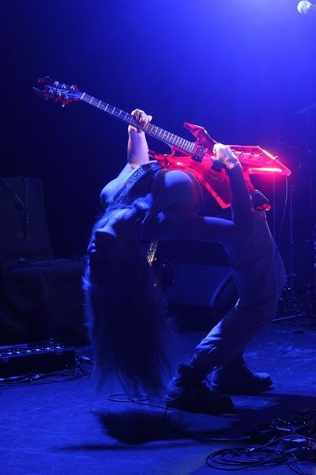

Sarah Neufeld - New York City, Le Poisson Rouge. 04/15/2016.
By Joe Marvilli


 23 April, 2016 - 04:31 — Joe Marvilli
23 April, 2016 - 04:31 — Joe Marvilli
Though it's often viewed as a regular music venue, Le Poisson Rouge, located in New York's Greenwich Village, was conceived as a place for contemporary classical music. No wonder Sarah Neufeld seemed so at home. With NYC as the last stop on her North American tour, the violinist put on a performance that had the entire crowd enraptured by her playing, her voice and a special guest.
To start the evening though was a set by ambient drone artist Alexandra Drewchin, known as Eartheater. Armed with just a guitar, an assortment of pedals and her voice, Drewchin weaved together a captivating set that pulsed with microbeats and flew with her choral singing. For you movie buffs though, it sounded like a sedated version of the beat-heavy opera performance from The Fifth Element.
Neufeld started her set without much fanfare, walking onstage alone with her violin. But far from limiting her sound, she quickly proved that her instrument and her voice that's needed to put on a mesmerizing concert. In addition to the endless fascination of watching an artist of her caliber perform, with her hands gliding over the violin with seemingly no effort, the music itself lost none of its scope or ambition in its transition to the stage.
While a solo set would have still been a great show, Neufeld did get some instrumental backup throughout her set. As she played through most of the material on her excellent new record, The Ridge, she was joined first by Stefan Schneider on drums and later on by that special guest, multireedist Colin Stetson. Whether he was on the saxophone or the clarinet, Stetson's earthy tones helped to keep Neufeld's airy, wind-swept melodies grounded. It was wonderful to see two artists connect so strongly onstage, sometimes playing equally to each other as they were to the audience.
Still, whether by herself or with others, Neufeld brought the power and strength of an entire orchestra. After an hour of music, the composer fully earned her standing ovation and could be seen surrounded by fans after the show. In her hands, contemporary classical music is alive and well.
